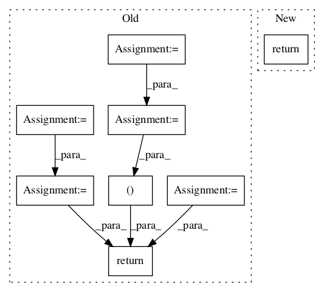

64099a1d2d671705cd9d4a18f9413f4c3569bc86,deepchem/models/tensorgraph/layers.py,NeighborList,get_cells_for_atoms,#NeighborList#Any#Any#,3565

Before Change
Shape (N_atoms, 1)
N_atoms, n_cells, ndim = self.N_atoms, self.n_cells, self.ndim
n_cells = int(n_cells)
// Tile both cells and coords to form arrays of size (N_atoms*n_cells, ndim)
tiled_cells = tf.tile(cells, (N_atoms, 1))
// Shape (N_atoms*n_cells, 1) after tile
tiled_coords = tf.reshape(
tf.tile(coords, (1, n_cells)), (n_cells * N_atoms, ndim))
coords_vec = tf.reduce_sum((tiled_coords - tiled_cells)**2, axis=1)
coords_norm = tf.reshape(coords_vec, (N_atoms, n_cells))
closest_inds = tf.nn.top_k(-coords_norm, k=1)[1]
return closest_inds
def _get_num_nbrs(self):
Get number of neighbors in current dimensionality space.
ndim = self.ndim
After Change
cells_for_atoms: tf.Tensor
Shape (N_atoms, 1)
return self._get_layer(False).get_cells_for_atoms(coords, cells)
def get_neighbor_cells(self, cells):
Compute neighbors of cells in grid.
In pattern: SUPERPATTERN
Frequency: 3
Non-data size: 8
Instances
Project Name: deepchem/deepchem
Commit Name: 64099a1d2d671705cd9d4a18f9413f4c3569bc86
Time:
Author: null
File Name: deepchem/models/tensorgraph/layers.py
Class Name: NeighborList
Method Name: get_cells_for_atoms
Project Name: Kamnitsask/deepmedic
Commit Name: 70cf20f6cf5e21c3b6165067483b925db61c161c
Time:
Author: null
File Name: deepmedic/neuralnet/ops.py
Class Name:
Method Name: applyDropout
Project Name: calico/basenji
Commit Name: f5ef1717933abb45db9669a724a6a4404818375b
Time:
Author: null
File Name: basenji/metrics.py
Class Name: StochasticReverseComplement
Method Name: call